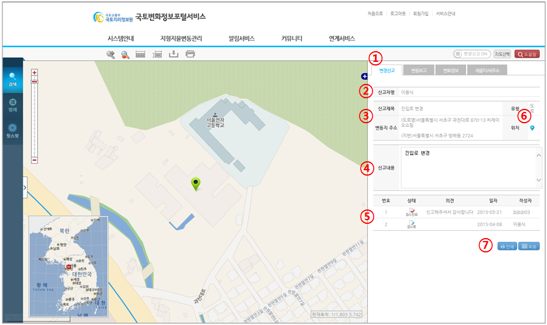

지형지물변동 > 지도변경조회(일반신고) > 상세보기
| ① |
|
|
| ② | 해당 변경신고 신청한 사용자의 정보가 나타난다. | |
| ③ | 변동정보 상세 내용을 열람한다. | |
| ④ | [다운로드] 버튼을 클릭하여 첨부파일을 다운로드 한다. | |
| ⑤ | 신고내용에 대한 담당자의 확인의견이 나타난다. | |
| ⑥ | [위치확인] 버튼을 클릭하여 지도 위치로 이동한다. | |
| ⑦ | [수정] 버튼을 클릭하여 처리되지 않은 일반신고내용을 수정할 수 있다. 이때, 일반신고 때 입력된 | |
| 인증비밀번호 확인을 통하여 작성자 인증을 거친다. | ||
| ⑧ | [삭제] 버튼을 클릭하여 처리되지 않은 일반신고내용을 삭제한다. 이때, 일반신고 때 입력된 | |
| 인증비밀번호 확인을 통하여 작성자 인증을 거친다. | ||
| ⑨ | [닫기] 버튼을 클릭하여 상세정보 창을 종료하고 조회창으로 되돌아간다.(13페이지 참조) |